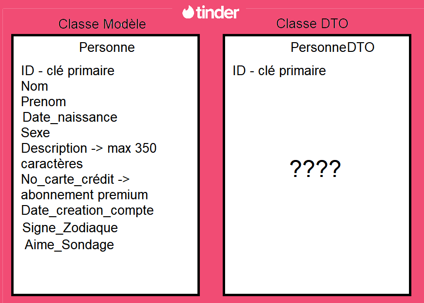
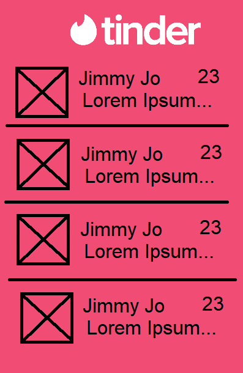
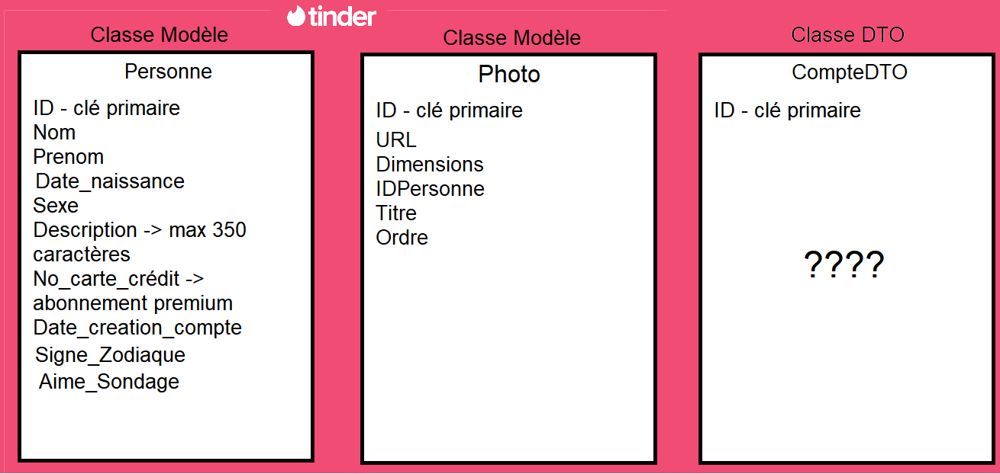

On expliquera comment envoyer une requête HTTP aux web services des exercices et réceptionner le résultat. On utilisera RETROFIT.
On réitérera l'importance des tests et des points d'arrêt en appels synchrones et asynchrones
Souvent, les classes de modèle ont beaucoup de champs, car la base de données garde énormément d'information. Mais pour plusieurs raisons (sécurité, espace, etc.), le client n'a pas besoin de toutes ces informations.
On utilise alors des classes de transfert (DTO) qui permettent de transférer seulement l'information utile entre le client et le serveur.
On expliquera à quoi servent les différentes classes de transfert dans la librairie librairie de DTO ou classes de transfert On montrera comment inclure la librairie dans votre projet:
Créez un projet appelé Simple. Le web service ici prend un nombre et retourne son double.
Tu dois démontrer un appel avec succès à ce web service dans une application Android depuis l'interface graphique.
Par exemple, une activité avec un EditText pour le nombre et un bouton pour déclencher l'appel. Au retour de la valeur (doublée), celle-ci est affichée dans un Toast.
Créez un projet appelé Complexe. Le web service ici prend un nom et retourne un objet complexe (remplacez whippsie par votre prénom dans l'URL).
Tu dois démontrer un appel avec succès à ce web service dans une application Android depuis l'interface graphique.
Par exemple, une activité avec un TextView qui affiche les données retournées par l'appel.
Créez un projet appelé Listes. Le projet doit partir une activité coupée en 2 dans le sense de la hauteur. Chaque moitié est occupée par un recyclerView qui sera peuplée par des appels suivants:
Créez un projet appelé Repos dans lequel vous créerez un service simple en GET sur l'URL https://api.github.com/users/departement-info-cem/repos
Dans cet exercice, on vous donne la classe de modèle et on cherche les champs qu'on va mettre dans la classe de transfert (PersonneDTO)
L'interface à droite montre les informations nécessaires à l'application.
Créez la classe de transfert avec les champs choisis. Il n'est pas nécessaire de faire l'interface
 On reprend l'exercice précédent mais avec maintenant deux classes modèles. On cherche les champs qu'on va mettre dans la classe de transfert (CompteDTO) toujours avec la même interface.
Créez la classe de transfert avec les champs choisis. Il n'est pas nécessaire de faire l'interface
